F.27 Harmonic Mean — Folios¶
Archival manuscript scans and diplomatic transcriptions from seelig’s notebooks for F.27 (Harmonic Mean) (SeeligNotebooks).
Folio 0183 (Page 1 of 19): Harmonic Mean |CD| = r(gamma + 1/gamma) & Construction Part I¶

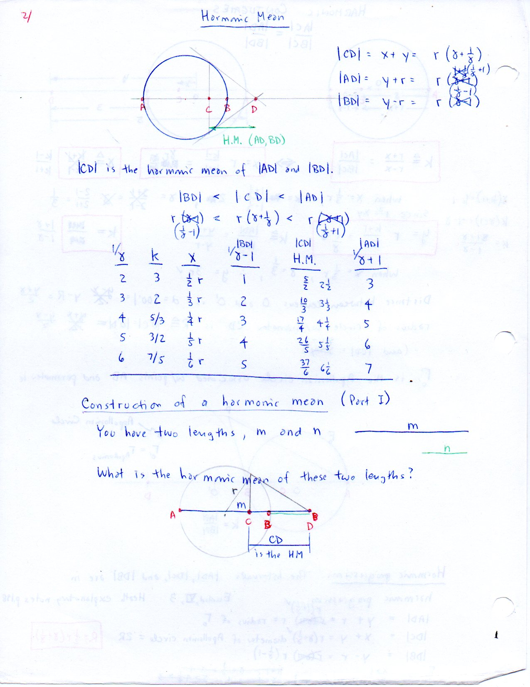
Folio 0183 (original scan 0183.jpg) from resources/seelig/27_harmonic-mean.¶
Diplomatic Mathematical & Geometric Transcription
Diplomatic Transcription — Folio 0183 (0183.jpg, Sheet 1 of 19):
Proves \(|CD| = \operatorname{HM}(|BD|, |AD|)\) with a table for \(1/\gamma \in \{2..6\}\) and begins the compass construction.
Folio 0184 (Page 2 of 19): Harmonic Mean and the Power of a Circle (Page 3)¶

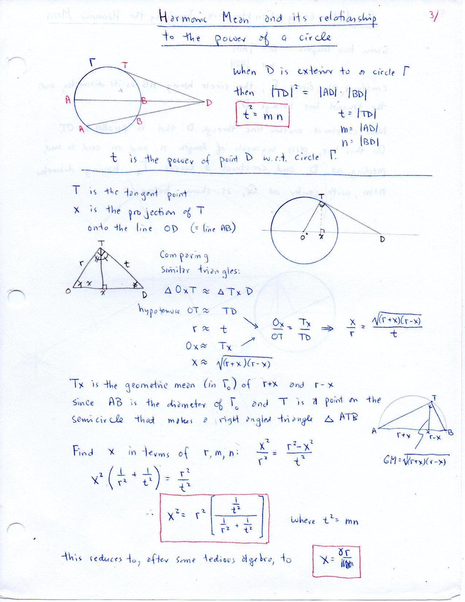
Folio 0184 (original scan 0184.jpg) from resources/seelig/27_harmonic-mean.¶
Diplomatic Mathematical & Geometric Transcription
Diplomatic Transcription — Folio 0184 (0184.jpg, Sheet 2 of 19):
Uses \(t^2 = mn\) and \(\triangle OxT \sim \triangle TxD\) to derive \(x^2 = r^2[\frac{1/t^2}{1/r^2+1/t^2}] = (r/\gamma)^2\).
Folio 0185 (Page 3 of 19): An Interesting Construction Involving the Harmonic Mean (Page 4)¶

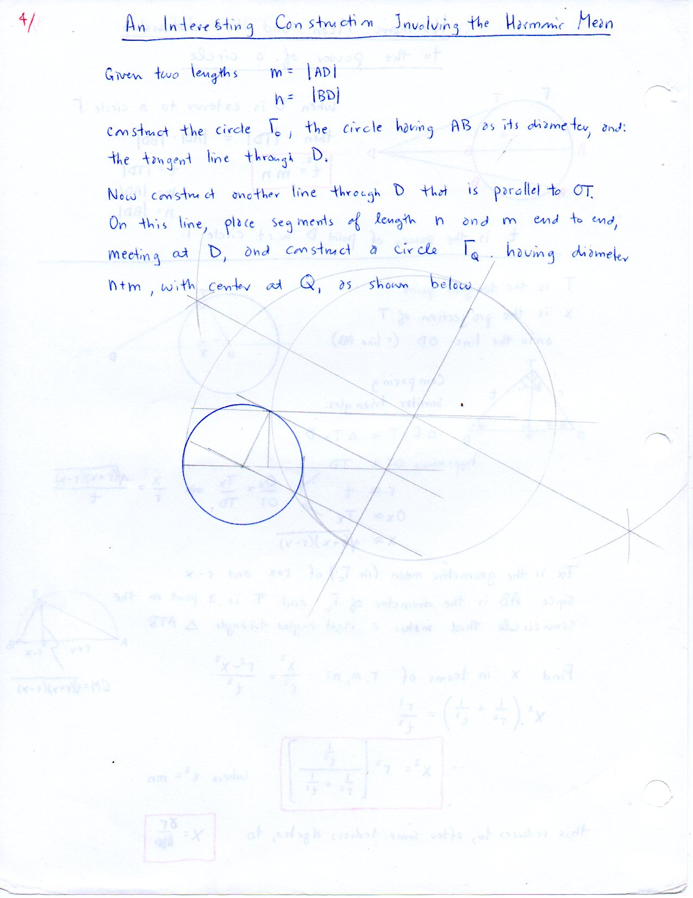
Folio 0185 (original scan 0185.jpg) from resources/seelig/27_harmonic-mean.¶
Diplomatic Mathematical & Geometric Transcription
Diplomatic Transcription — Folio 0185 (0185.jpg, Sheet 3 of 19):
Constructs circle \(\Gamma_0\) of diameter \(AB = m-n\) and auxiliary circle \(\Gamma_Q\) of diameter \(m+n\).
Folio 0186 (Page 4 of 19): Parallel/Perpendicular Angle Chase on Circles Gamma_0 and Gamma_O’’ (Page 6)¶

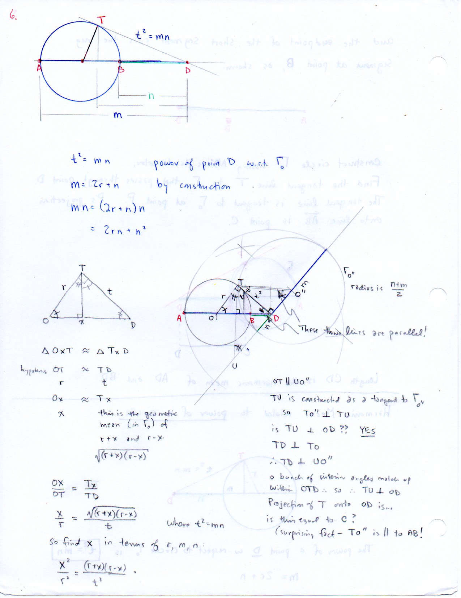
Folio 0186 (original scan 0186.jpg) from resources/seelig/27_harmonic-mean.¶
Diplomatic Mathematical & Geometric Transcription
Diplomatic Transcription — Folio 0186 (0186.jpg, Sheet 4 of 19):
Proves \(OT \parallel UO''\), \(TU \perp OD\), and \(x^2/r^2 = (r^2-x^2)/t^2\).
Folio 0187 (Page 5 of 19): Boxed Formula for Projection x = r/gamma & Worked Example (Page 7)¶

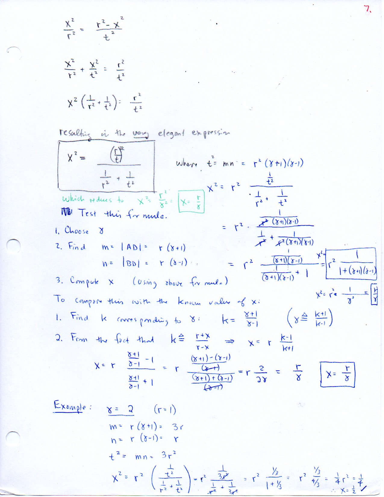
Folio 0187 (original scan 0187.jpg) from resources/seelig/27_harmonic-mean.¶
Diplomatic Mathematical & Geometric Transcription
Diplomatic Transcription — Folio 0187 (0187.jpg, Sheet 5 of 19):
Completes the proof of \(x = r/\gamma\) and tests \(\gamma = 2, r = 1 \implies m=3, n=1, t^2=3, x=1/2\).
Folio 0188 (Page 6 of 19): Harmonic Progression Proof via Euclid VI.3 (Heath p. 198)¶

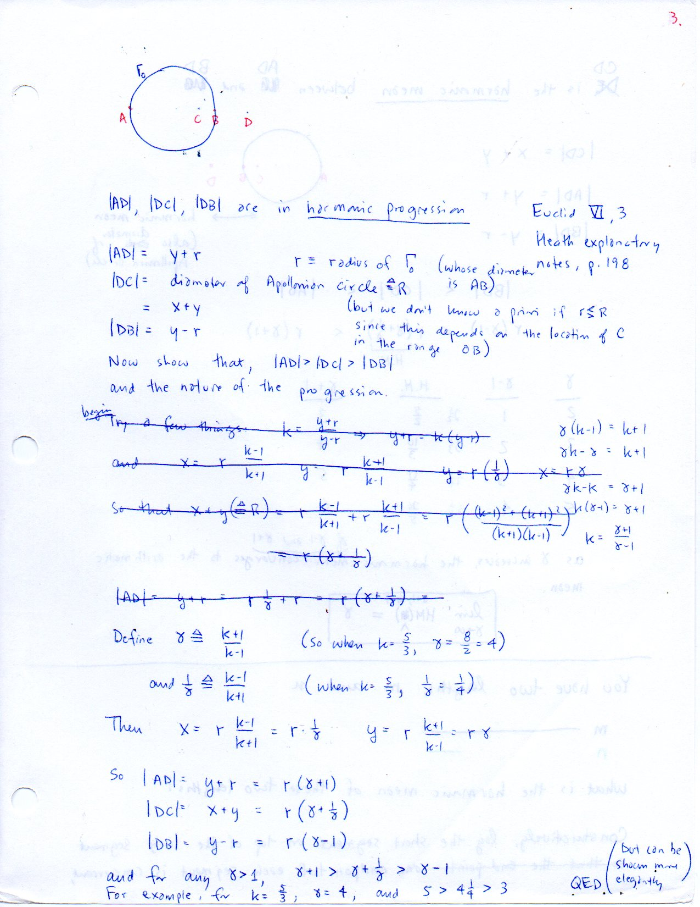
Folio 0188 (original scan 0188.jpg) from resources/seelig/27_harmonic-mean.¶
Diplomatic Mathematical & Geometric Transcription
Diplomatic Transcription — Folio 0188 (0188.jpg, Sheet 6 of 19):
Shows that \(|AD| = r(\gamma+1), |DC| = r(\gamma+1/\gamma), |DB| = r(\gamma-1)\) are in harmonic progression.
Folio 0189 (Page 7 of 19): Asymptotic Limit lim_{gamma->inf} HM(gamma+1, gamma-1) = gamma¶

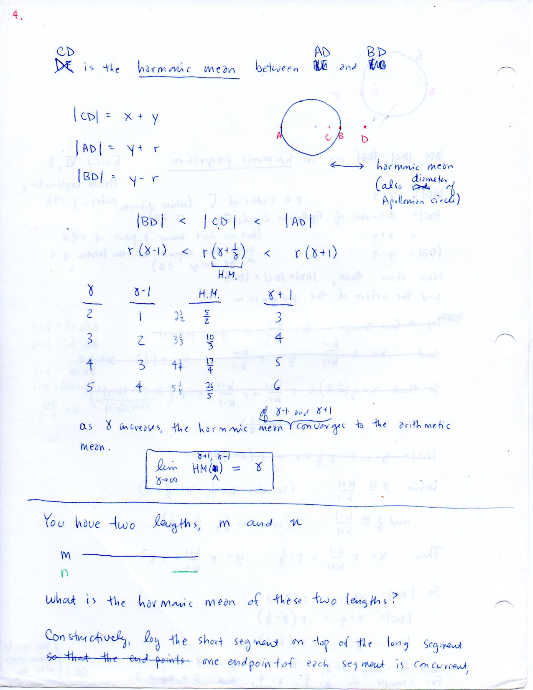
Folio 0189 (original scan 0189.jpg) from resources/seelig/27_harmonic-mean.¶
Diplomatic Mathematical & Geometric Transcription
Diplomatic Transcription — Folio 0189 (0189.jpg, Sheet 7 of 19):
Proves the asymptotic limit and tabulates values for \(\gamma \in \{2, 3, 4, 5\}\).
Folio 0190 (Page 8 of 19): Derivation of x, y, and Apollonian Radius R from xy = r^2¶

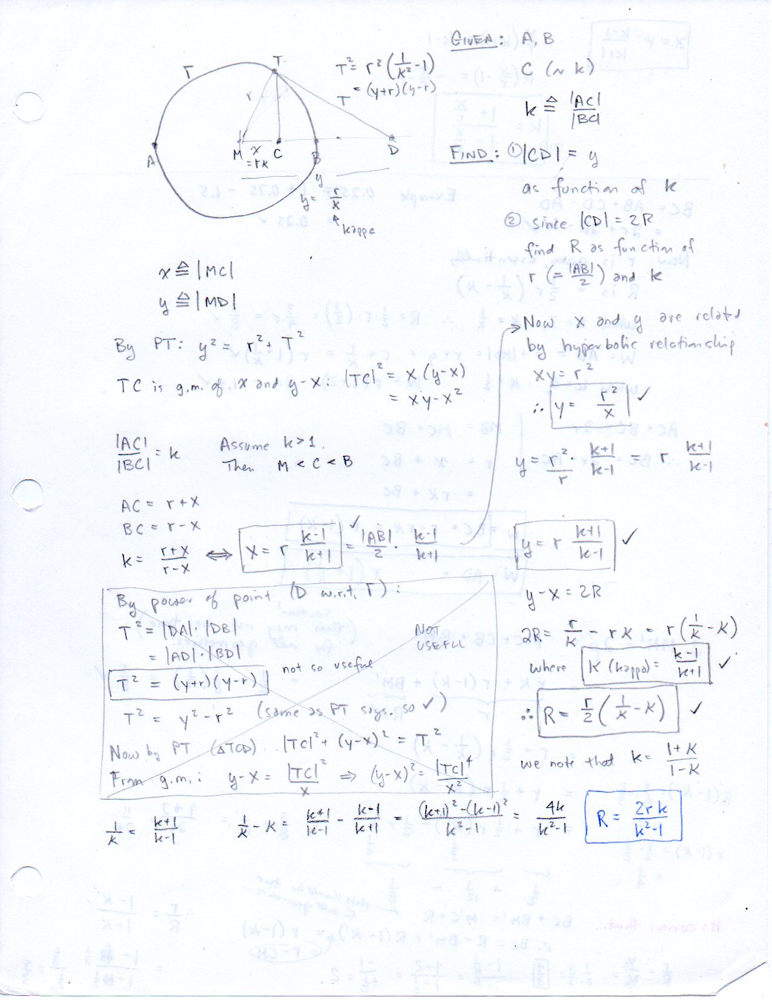
Folio 0190 (original scan 0190.jpg) from resources/seelig/27_harmonic-mean.¶
Diplomatic Mathematical & Geometric Transcription
Diplomatic Transcription — Folio 0190 (0190.jpg, Sheet 8 of 19):
Derives \(x = r\frac{k-1}{k+1}, y = r\frac{k+1}{k-1}\), and \(R = \frac{2rk}{k^2-1}\).
Folio 0191 (Page 9 of 19): Identities for w = BC, W = AD, and Center Distance MM’ = 2*rho¶

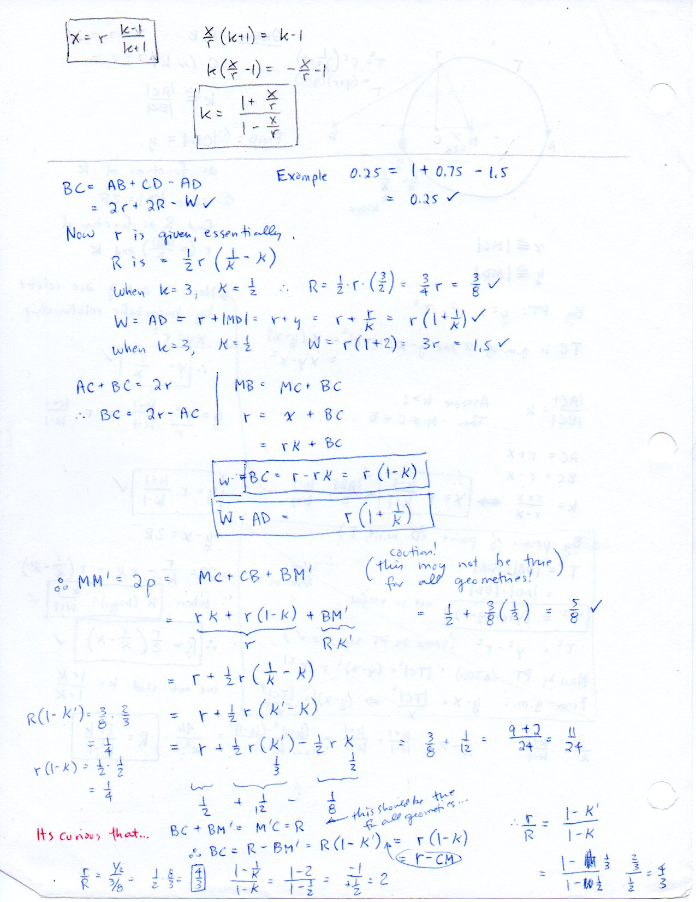
Folio 0191 (original scan 0191.jpg) from resources/seelig/27_harmonic-mean.¶
Diplomatic Mathematical & Geometric Transcription
Diplomatic Transcription — Folio 0191 (0191.jpg, Sheet 9 of 19):
Proves \(r/R = (1-\kappa')/(1-\kappa)\) and tests \(k=3, \kappa=1/2\).
Folio 0192 (Page 10 of 19): Harmonic Progression Examples 1 & 2 (Cropped Scan)¶

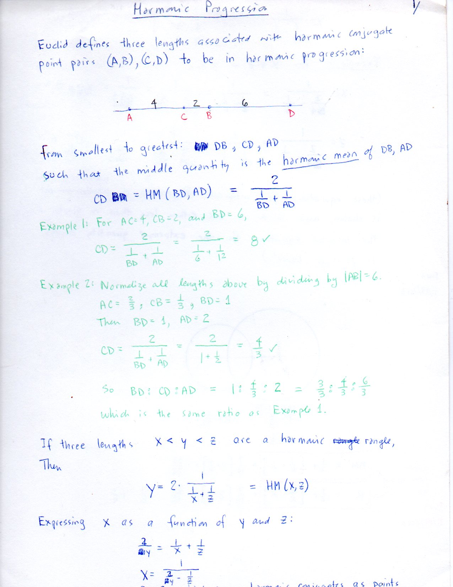
Folio 0192 (original scan 0192.jpg) from resources/seelig/27_harmonic-mean.¶
Diplomatic Mathematical & Geometric Transcription
Diplomatic Transcription — Folio 0192 (0192.jpg, Sheet 10 of 19):
Works \(AC=4, CB=2, BD=6 \implies CD = \operatorname{HM}(6,12) = 8\).
Folio 0193 (Page 11 of 19): Harmonic Progression with Euclid VI.3 Footnote (Partial Scan)¶

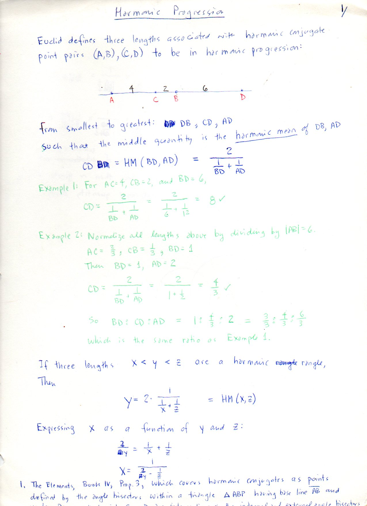
Folio 0193 (original scan 0193.jpg) from resources/seelig/27_harmonic-mean.¶
Diplomatic Mathematical & Geometric Transcription
Diplomatic Transcription — Folio 0193 (0193.jpg, Sheet 11 of 19):
Shows the first two lines of Footnote 1 on angle bisectors of \(\triangle ABP\).
Folio 0194 (Page 12 of 19): Harmonic Progression with Full Euclid VI.3 Footnote¶

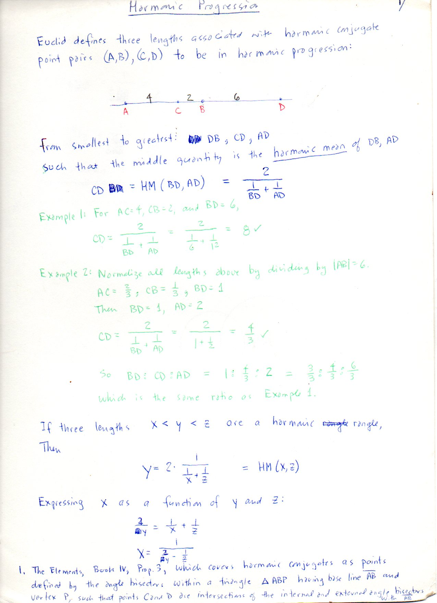
Folio 0194 (original scan 0194.jpg) from resources/seelig/27_harmonic-mean.¶
Diplomatic Mathematical & Geometric Transcription
Diplomatic Transcription — Folio 0194 (0194.jpg, Sheet 12 of 19):
Uncropped scan showing all three lines of Footnote 1 citing Elements VI.3.
Folio 0195 (Page 13 of 19): Harmonic Progression Page 2: Example 3 & r = 7/8, kappa = 1/2 (FWS 11/13/2013)¶

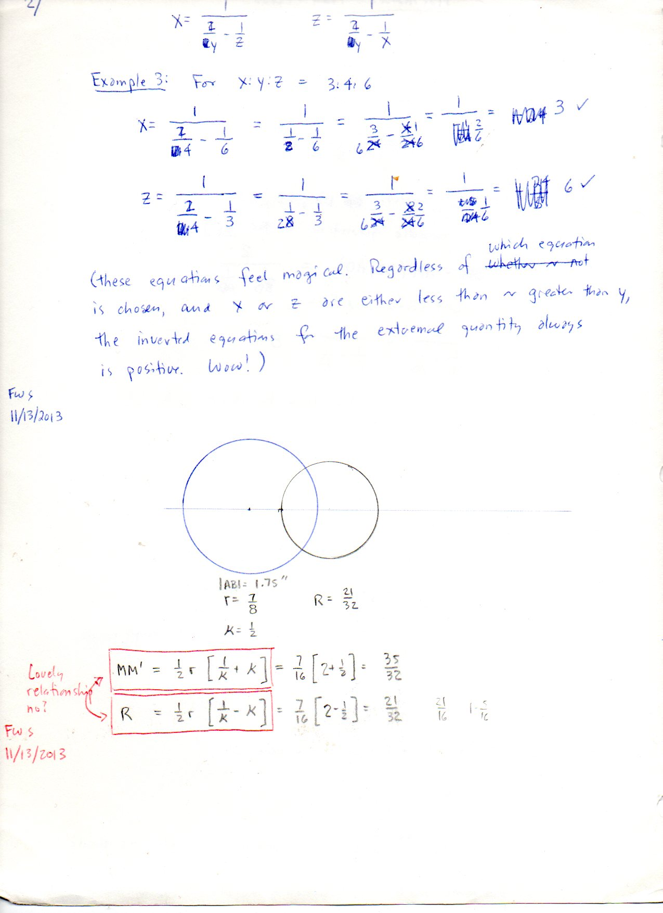
Folio 0195 (original scan 0195.jpg) from resources/seelig/27_harmonic-mean.¶
Diplomatic Mathematical & Geometric Transcription
Diplomatic Transcription — Folio 0195 (0195.jpg, Sheet 13 of 19):
Computes \(MM' = 35/32\) and \(R = 21/32\) for \(r = 7/8, \kappa = 1/2\).
Folio 0196 (Page 14 of 19): Duplicate Scan of Harmonic Progression Page 2¶

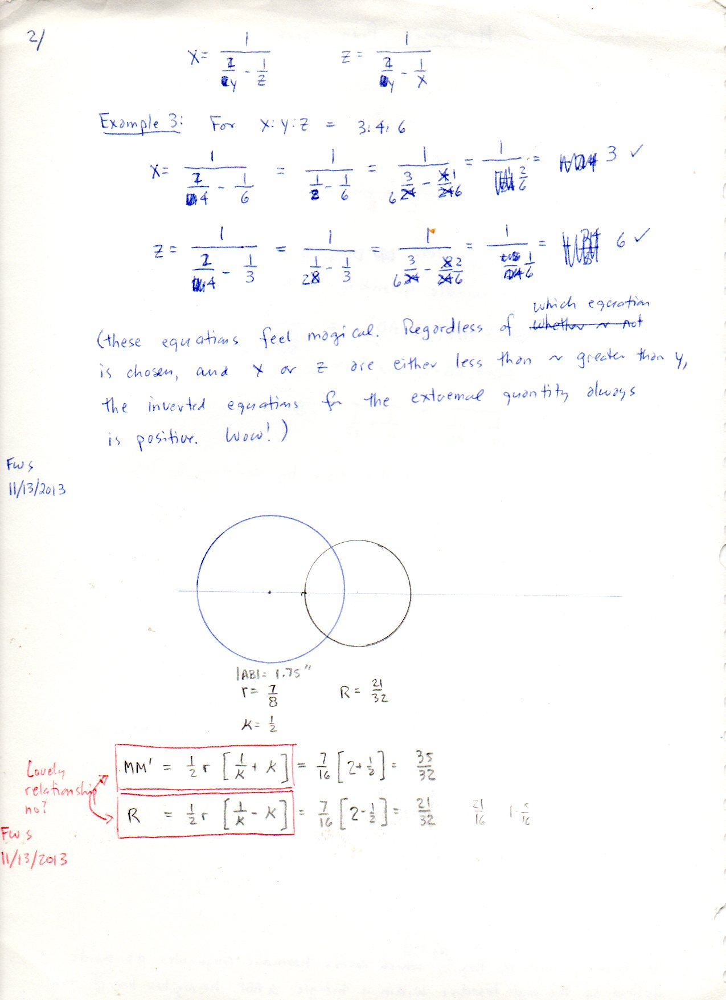
Folio 0196 (original scan 0196.jpg) from resources/seelig/27_harmonic-mean.¶
Diplomatic Mathematical & Geometric Transcription
Diplomatic Transcription — Folio 0196 (0196.jpg, Sheet 14 of 19):
Second scan of the FWS 11/13/2013 worksheet.
Folio 0197 (Page 15 of 19): Problems 6–9: Prime-Number Harmonic Ranges (FWS 11/14/2013)¶

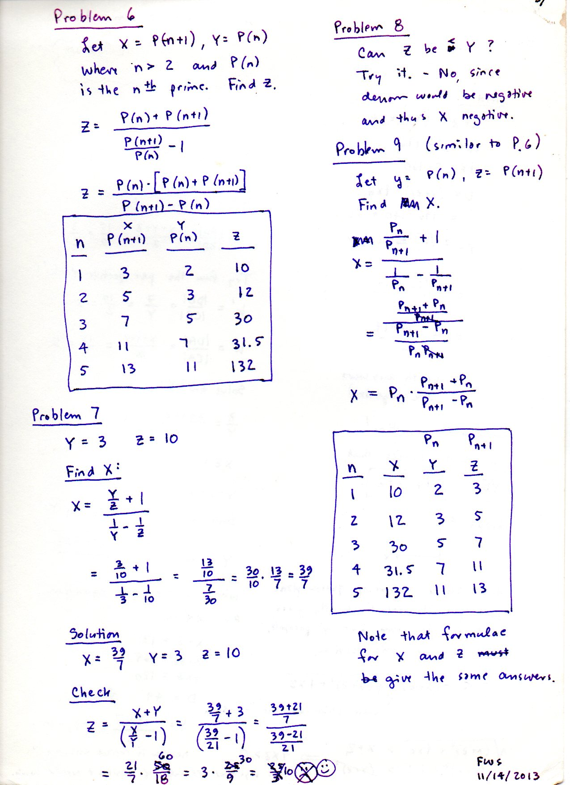
Folio 0197 (original scan 0197.jpg) from resources/seelig/27_harmonic-mean.¶
Diplomatic Mathematical & Geometric Transcription
Diplomatic Transcription — Folio 0197 (0197.jpg, Sheet 15 of 19):
Evaluates \(Z = \frac{P_n(P_n+P_{n+1})}{P_{n+1}-P_n}\) for consecutive primes \((3,2)\to 10, (5,3)\to 12, (7,5)\to 30, (11,7)\to 63/2\).
Folio 0198 (Page 16 of 19): Problem 10: Quadratic for Middle Segment Y Given X and Z¶

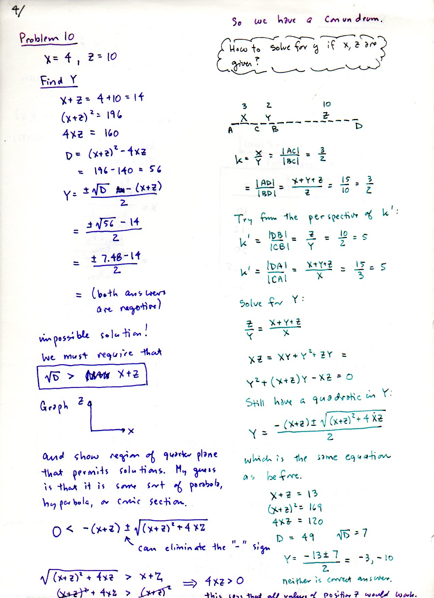
Folio 0198 (original scan 0198.jpg) from resources/seelig/27_harmonic-mean.¶
Diplomatic Mathematical & Geometric Transcription
Diplomatic Transcription — Folio 0198 (0198.jpg, Sheet 16 of 19):
Solves \(Y^2 + (X+Z)Y - XZ = 0\) for the internal segment \(Y = CB\).
Folio 0199 (Page 17 of 19): Bilinear Transform Through the Lens of Harmonic Conjugates (Page 1, Oct. 25, 2013)¶

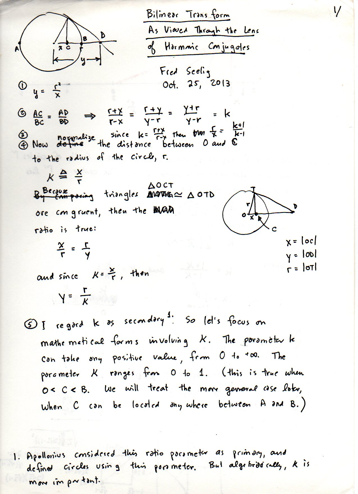
Folio 0199 (original scan 0199.jpg) from resources/seelig/27_harmonic-mean.¶
Diplomatic Mathematical & Geometric Transcription
Diplomatic Transcription — Folio 0199 (0199.jpg, Sheet 17 of 19):
Explains why \(\kappa = x/r\) is algebraically primary compared to Apollonius’s ratio \(k\).
Folio 0200 (Page 18 of 19): Hyperbola Plots for k(kappa) and kappa(k) (Page 2)¶

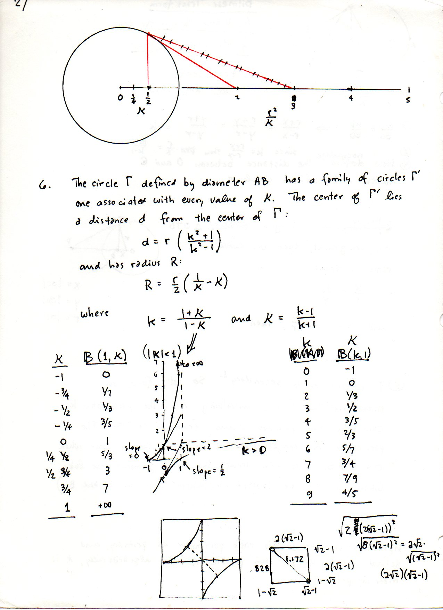
Folio 0200 (original scan 0200.jpg) from resources/seelig/27_harmonic-mean.¶
Diplomatic Mathematical & Geometric Transcription
Diplomatic Transcription — Folio 0200 (0200.jpg, Sheet 18 of 19):
Tables and sketches of \(k = \frac{1+\kappa}{1-\kappa}\) and \(\kappa = \frac{k-1}{k+1}\).
Folio 0201 (Page 19 of 19): Self-Inverse Bilinear Transform y = (1-x)/(1+x) (Page 3)¶

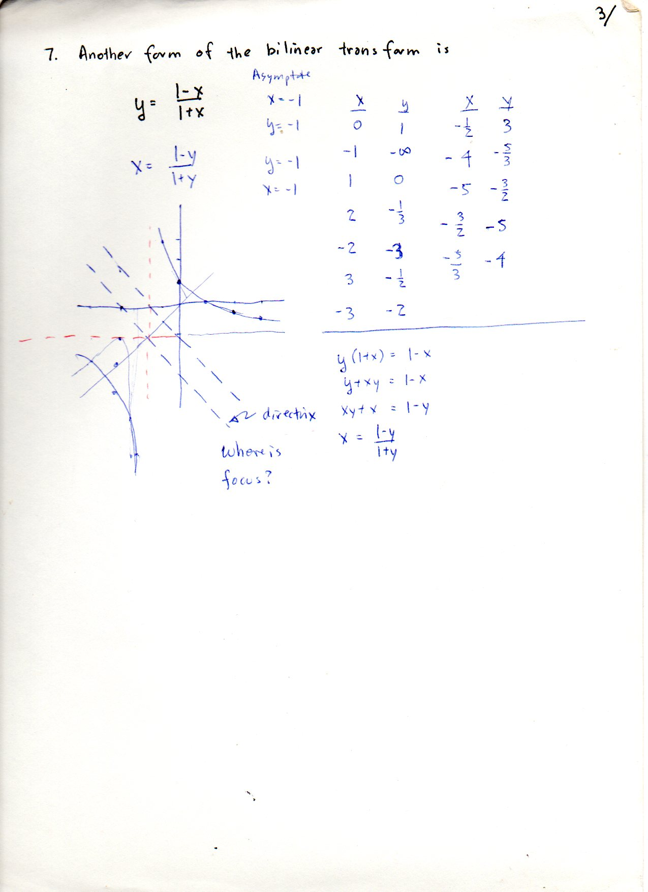
Folio 0201 (original scan 0201.jpg) from resources/seelig/27_harmonic-mean.¶
Diplomatic Mathematical & Geometric Transcription
Diplomatic Transcription — Folio 0201 (0201.jpg, Sheet 19 of 19):
Plots \(y = \frac{1-x}{1+x}\) with asymptotes \(x = -1, y = -1\).